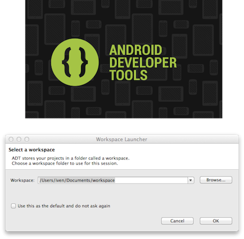
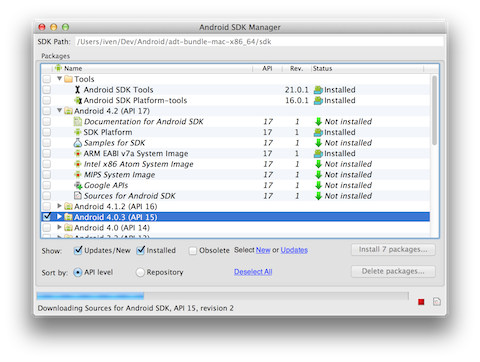
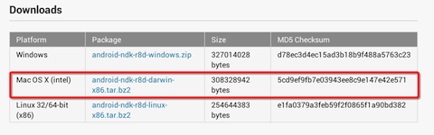
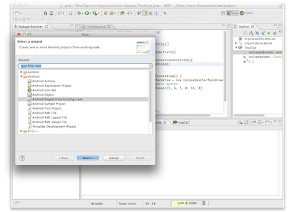
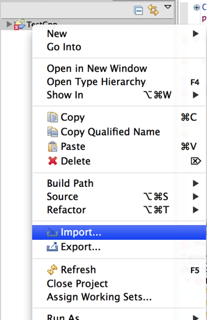
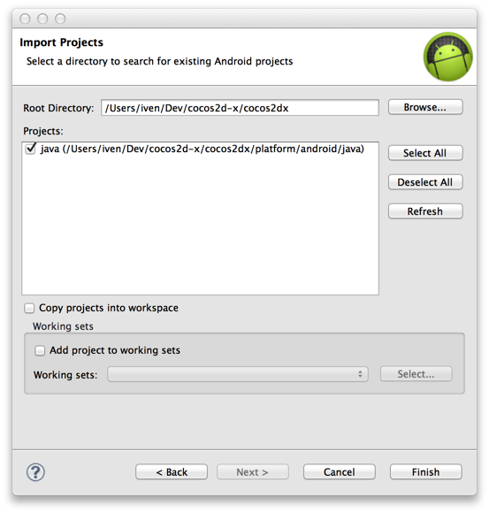
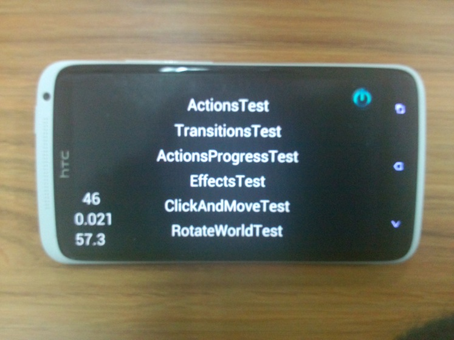
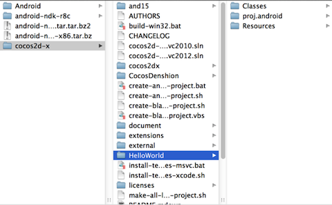
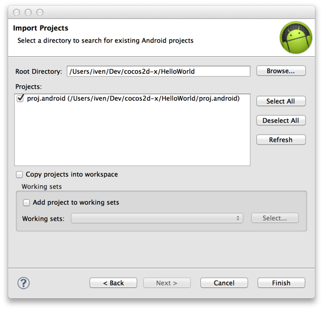
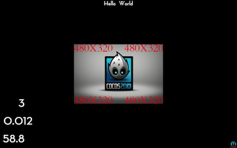

Mac OSX平台搭建Android开发环境
测试环境：
- Cocos2d-x版本号：Cocos2d-2.0-x-2.0.4
- OS X版本号：10.8
- NDK版本号：android-ndk-r8b
- 设备：Android 4.0.3（支持2.3版本及以上）
下载最新Cocos2d-x
- 从Cocos2d-x官方网站下载最新的Cocos2d-x。
- 解压ZIP文件。本指南中解压库的存放位置如下：
1/Users/iven/dev/cocos2d-xJDK
检测JDK是否安装，版本是否大于1.6.0。打开终端，输入：
1java -versionMacOS X会自动下载JDK，如图所示。

你会看到如下所示信息：
1java version "1.6.0_37"
2Java(TM) SE Runtime Environment (build 1.6.0_37-b06-434-11M3909)
3Java HotSpot(TM) 64-Bit Server VM (build 20.12-b01-434, mixed mode)检查完后，便可开始设置Mac的Android开发环境。
搭建ADT Bundle及现存集成开发环境
用Eclipse下载ADT： http://developer.android.com/sdk/index.html#download。
解压ZIP文件（名字为“adt-bundle-
打开adt-bundle-

在MBP Retina电脑中安装Eclipse
如果你用的是配备Retina显示屏的MacBook Pro电脑，注意原装Eclipse不支持Retina显示屏，但是可以使用简单的技巧启动Retina支持功能。（本方法来自：https://bugs.eclipse.org/bugs/show_bug.cgi?id=382972）
- 在Eclipse.app上执行“Show package contents”
- 编辑Contents/Info.plist文件。
- 就在以下代码上方
1</dict> 2</plist>增加以下代码
1<key>NSHighResolutionCapable</key> 2<true/> - 将Eclipse.app应用移至一个新文件夹（清除OS X中info.plist文件的缓存），然后再移回旧文件夹。 5．启动Eclipse即可，已支持Retina显示屏。
获取Android SDK
从Android SDK Manager中下载SDK
在Android Manager中检查你要用到的所有工具及Android API。最好也检查一下Extras。检查完毕之后，点击“Install Packages”（安装资源包），此时会出现一个对话框。点击“Accept All”（全部接受）然后点击“Install”（安装）开始安装。等待安装结束即可。如下图所示。

获取NDK
从http://developer.android.com/tools/sdk/ndk/index.html中下载Mac版本的Android NDK。
解压NDK并将其放到一个可访问的位置，最好放到与Android SDK Root相同的文件夹中。本指南中，Android NDK存放路径为Users/iven/Dev/android-ndk-r8c，同时该路径也为Android NDK Root路径。

至此集成开发环境已经加载Android开发人员工具（Android Developer Tools）插件，SDK准备就绪。
现在已经准备好用Cocos2d-x来开发跨平台游戏。但是我们还得做一些小修改，以便后续顺利开发。打开终端，输入以下命令：
1export ANDROID_SDK_ROOT="/Users/iven/Dev/android/Users/iven/Dev/Android/adt-bundle-mac-x86_64/sdk"
2export NDK_ROOT="/Users/iven/Dev/android-ndk-r8c" 不要忘了改变Android SDK Root及Android NDK Root的值，后面将会用到这些变量。
编译及运行测试demo
命令行
进入/Users/iven/Dev/cocos2d-x/samples/Cpp/TestCpp/proj.android目录，执行以下命令生成build_native.sh文件：
1IvenYangtekiMacBook-Pro:proj.android iven$ ./build_native.sh
2NDK_ROOT = /Users/iven/Dev/android-ndk-r8c
3
4COCOS2DX_ROOT = /Users/iven/Dev/cocos2d-x/samples/Cpp/TestCpp/proj.android/../../../..
5APP_ROOT = /Users/iven/Dev/cocos2d-x/samples/Cpp/TestCpp/proj.android/..
6APP_ANDROID_ROOT = /Users/iven/Dev/cocos2d-x/samples/Cpp/TestCpp/proj.android
7Using prebuilt externals
8make: Entering directory `/Users/iven/Dev/cocos2d-x/samples/Cpp/TestCpp/proj.android'
9
10...
11
12Compile++ thumb : cocos_extension_static <= LocalStorageAndroid.cpp
13Prebuilt : curl.a <= /Users/iven/Dev/cocos2d-x/samples/Cpp/TestCpp/proj.android/../../../../cocos2dx/platform/third_party/android/prebuilt/libcurl/libs/armeabi/
14StaticLibrary : libextension.a
15StaticLibrary : libtestcppcommon.a
16SharedLibrary : libtestcpp.so
17Install : libtestcpp.so => libs/armeabi/libtestcpp.so
18make: Leaving directory `/Users/iven/Dev/cocos2d-x/samples/Cpp/TestCpp/proj.android'选择Testcpp Eclipse项目
从现存代码中选择Eclipse Android项目（/Users/iven/Dev/cocos2d-x/samples/Cpp/TestCpp/proj.android）

在设备中编译并运行（执行“Build && Run”）该测试demo（Test demo）
注意：编译过程中可能出现如下错误：
1Cocos2dxGLSurfaceView cannot be resolved to a typeTestCpp.java/TestCpp/src/org/cocos2dx/testcppline 38Java Problem
2Cocos2dxGLSurfaceView cannot be resolved to a typeTestCpp.java/TestCpp/src/org/cocos2dx/testcppline 38Java Problem
3Cocos2dxActivity cannot be resolved to a typeTestCpp.java/TestCpp/src/org/cocos2dx/testcppline 34Java Problem
4Cocos2dxGLSurfaceView cannot be resolved to a typeTestCpp.java/TestCpp/src/org/cocos2dx/testcppline 37Java Problem
5Cocos2dxActivity cannot be resolved to a typeTestCpp.java/TestCpp/src/org/cocos2dx/testcppline 31Java Problem你可以通过导入另一个项目（in this tutorial is /Users/iven/Dev/cocos2d-x/cocos2dx）来修复该错误。


现在，在设备中再次编译并运行（build & run）便会得到以下结果。

创建HelloWorld
至此我们已经为Mac电脑搭建好了环境，即可以用Cocos2d-x来进行跨平台开发了。下一步是在Eclipse中创建一个跨平台项目，当然是用Cocos2d-x引擎。
将create-android-project.sh文件前面的代码换成如下：
1NDK_ROOT_LOCAL="/Users/iven/Dev/android-ndk-r8c"
2ANDROID_SDK_ROOT_LOCAL="/Users/iven/Dev/Android/adt-bundle-mac-x86_64/sdk" 进入cocos2d-x根目录，运行以下命令生成create-android-project.sh文件并创建名为“HelloWorld”的新Android项目。
1IvenYangtekiMacBook-Pro:Cocos2d-x iven$ /Users/iven/Dev/cocos2d-x/create-android-project.sh
2use global definition of NDK_ROOT: /Users/iven/Dev/android-ndk-r8c/tools
3use global definition of ANDROID_SDK_ROOT: /Users/iven/Dev/Android/adt-bundle-mac-x86_64/sdk
4Input package path. For example: org.cocos2dx.example
5org.cocos2dx.HelloWorld
6Now Cocos2d-x supports Android 2.2 or upper version
7Available Android targets:
8----------
9id: 1 or "android-15"
10 Name: Android 4.0.3
11 Type: Platform
12 API level: 15
13 Revision: 3
14 Skins: HVGA, QVGA, WQVGA400, WQVGA432, WSVGA, WVGA800 (default), WVGA854, WXGA720, WXGA800
15 ABIs : armeabi-v7a
16----------
17id: 2 or "android-17"
18 Name: Android 4.2
19 Type: Platform
20 API level: 17
21 Revision: 1
22 Skins: HVGA, QVGA, WQVGA400, WQVGA432, WSVGA, WVGA800 (default), WVGA854, WXGA720, WXGA800, WXGA800-7in
23 ABIs : armeabi-v7a
24input target id:
251
26input your project name:
27HelloWorld完成HelloWorld项目创建之后，你会在cocos2d-x根目录看到该项目。如下图所示。

在终端运行“helloworld/proj.android/build_native.sh”：
1Compile thumb : chipmunk_static <= cpSweep1D.c
2Compile thumb : chipmunk_static <= cpVect.c
3StaticLibrary : libchipmunk.a
4StaticLibrary : libextension.a
5SharedLibrary : libgame.so
6Install : libgame.so => libs/armeabi/libgame.so
7make: Leaving directory `/Users/iven/Dev/cocos2d-x/helloworld/proj.android'
8IvenYangtekiMacBook-Pro:Cocos2d-x iven$ 导入helloworld Eclipse项目
在“Existing Code”中选择“Eclipse Android Project”（ /Users/iven/Dev/cocos2d-x/helloworld/proj.android）

在设备中运行该应用以编译并安装。

至此便完成了在Mac平台上搭建Android开发环境。希望本指南对你有帮助并祝编码愉快。